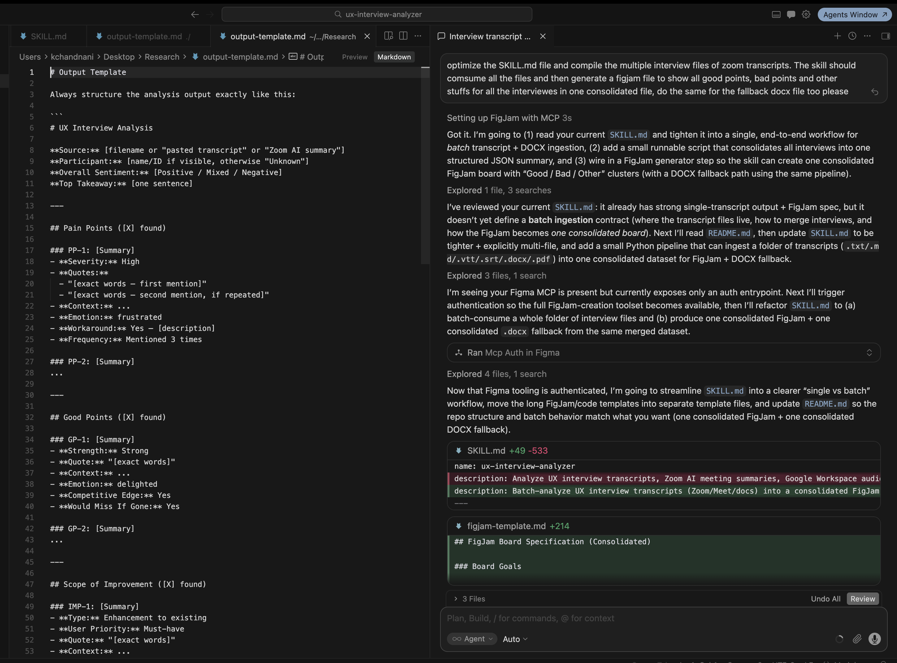
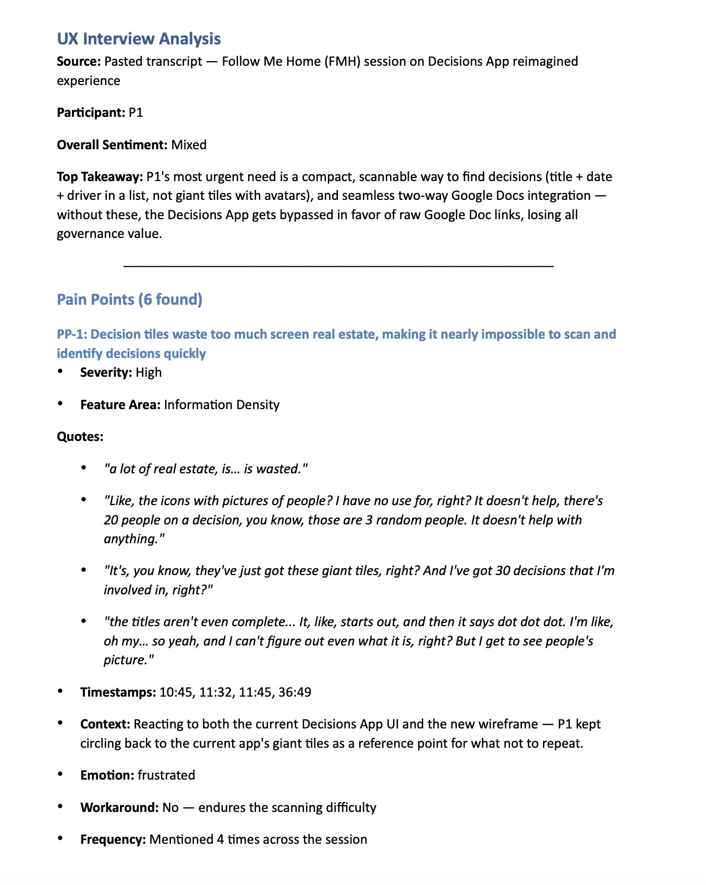
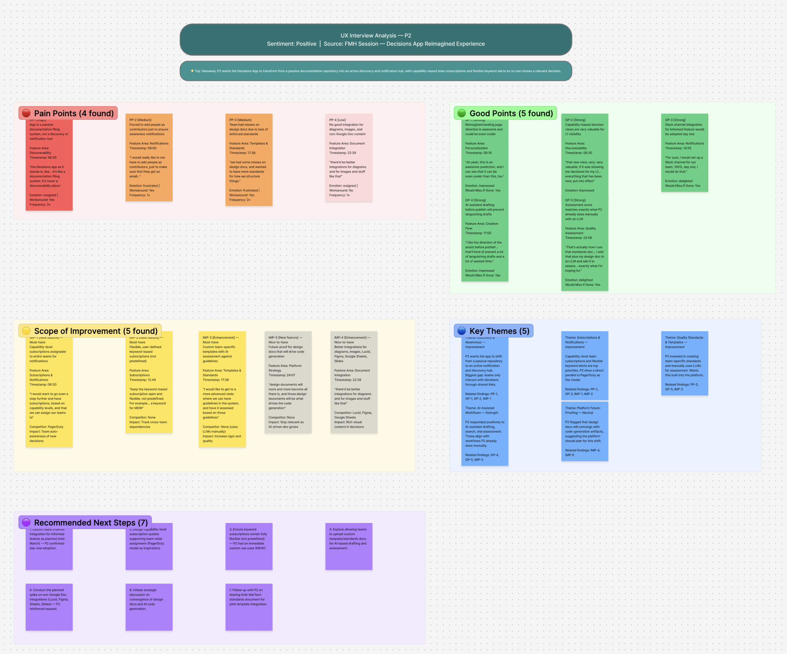

A Claude AI Skill that reads raw UX interview transcripts and auto-generates anonymized .docx research reports and FigJam affinity boards covering pain points, emotion tags, themes, and sentiment in ~30 seconds. Tested across 25 real transcripts for accuracy.

Drop in any UX interview transcript. The skill does the heavy lifting so you can focus on decisions, not documentation.
Each friction moment tagged with severity (High / Med / Low), direct participant quotes, emotion label, workaround used, frequency count, and feature area.
What's already working, extracted with strength rating, supporting quotes, emotion tag, and a competitive edge note to preserve in future iterations.
Opportunity areas with priority ranking, type (Enhancement / New Feature / Bug Fix), effort estimate, and impact vs. effort context.
Organic clusters that emerge across the session, named and described, cross-referenced with supporting data points from the transcript.
Session-level sentiment (Positive / Mixed / Negative) with a one-line rationale derived from the dominant emotional tone across the interview.
All participant names are detected and replaced with coded identifiers (P1, P2 …) throughout the entire report before any output is written.
Two ready-to-share artifacts drop to your Desktop automatically. No copy-pasting, no reformatting.
Paste any UX interview transcript into Cursor chat. The skill reads the SKILL.md contract, parses the output template, and runs a structured analysis pipeline that extracts all findings, anonymizes names, and writes both output files without any manual steps.

A Word-compatible report with participant metadata, overall sentiment, top takeaway, and every pain point with severity, timestamped quotes, emotion tag, workaround, and frequency. Stakeholder-ready, no editing needed.

Color-coded sticky note clusters for Pain Points (red), Good Points (green), Scope of Improvement (yellow), Key Themes (blue), and Recommended Next Steps (purple). Ready to share in design reviews.
A structured pipeline from raw transcript to two polished deliverables, triggered by a single paste.
Works with pasted text, Zoom AI summaries, Google Workspace docs, or raw notes. Any MP4 or video file can also be sent directly. If connected to Google Drive or Zoom, recordings can be inserted straight from the source without downloading first.
The skill reads its own SKILL.md file which specifies exactly what to extract, how to structure each finding, and what fields are required for Pain Points, Good Points, Scope, Themes, and Sentiment.
Before any output is written, the skill scans for participant names and replaces every occurrence with P1, P2, P3 ... throughout all sections, ensuring full anonymization across quotes, context notes, and metadata.
The skill writes a formatted .docx report and a FigJam board specification file to the Desktop simultaneously. No copy-paste, no reformatting. Open and share.
# Output Template ## UX Interview Analysis Source: {{filename or "pasted transcript"}} Participants: {{name/ID, anonymize "Name" to "P1, P2 …"}} Overall Sentiment: {{Positive / Mixed / Negative}} Top Takeaway: {{one sentence}} ## Pain Points ({{n}} found) ### PP-1: {{Summary}} ==Severity== High | Med | Low ==Quotes== "least words, first mention" "least words, second mention, if repeated" ==Context== {{description}} ==Emotion== frustrated | confused | anxious | … ==Workaround== No / {{description}} ==Frequency== Mentioned {{n}} times across the session ## Good Points / Scope of Improvement → same schema ## Key Themes ({{n}}) ### Theme Name ==Description== … ==Data Points== … ## FigJam Board Spec → Pain Points (red) · Good Points (green) → Scope (yellow) · Key Themes (blue) → Next Steps (purple)
Three steps. Takes under a minute.
ux-interview-analyzer/ into ~/.cursor/skills/ on your machine. Create the skills/ directory if it doesn't exist yet.
.docx report and FigJam board will appear on your Desktop in ~30 seconds.
I'm exploring how AI can eliminate the tedious parts of UX research so designers can spend more time on insight and less on formatting.